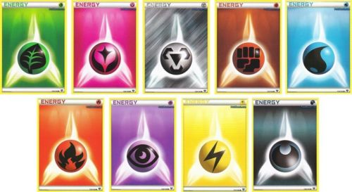

Energy cards are attached to a Pokémon to power that Pokémon's attacks. Typically, only one Energy card may be played per turn. There are two main categories of Energy cards: Basic Energy and Special Energy. The nine different Basic Energy types (which correspond to Pokémon card types) are Grass, Fire, Water, Lightning, Psychic, Fighting, Darkness, Metal, and Fairy. (Two additional types, Dragon and Colorless, do not have their own Energy cards and instead use other types of Energy.) Basic Energy cards are used only to fulfill costs for attacking and retreating, while Special Energy cards have additional benefits. Most attacks require a certain type and amount of Energy. If an attack requires a certain type and amount of Energy, then that type and amount of Energy must be attached to the Pokémon. If the attack has a Colorless Energy requirement, that requirement can be met by any Energy card.
 The above image shows all regular energy cards as of the Sun and Moon set.